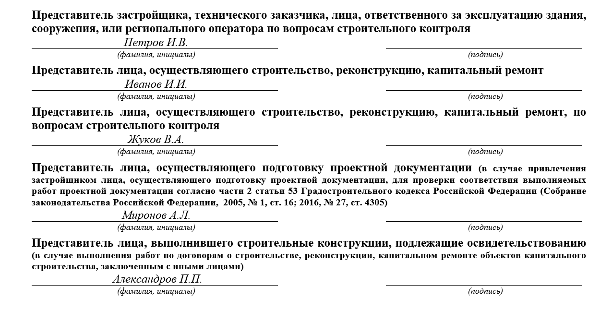
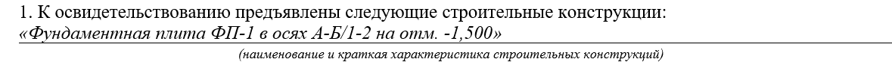
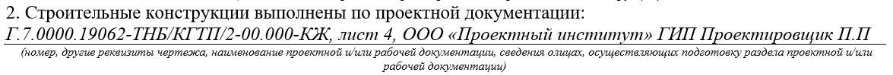
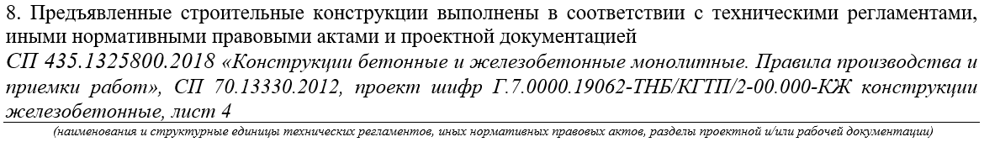
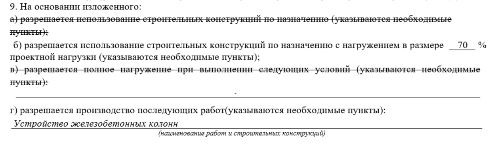
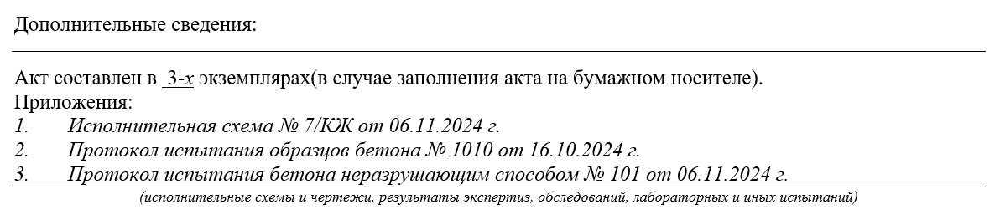

Простой способ составить акт освидетельствования ответственных конструкций (АООК)
Грамотно составленный АООК — это гарантия того, что все важные элементы здания установлены правильно и безопасно, а при строительстве не было допущено критических ошибок, которые могут привести к серьёзным последствиям. На этом уроке вы разберетесь, как составлять АООК, чтобы избежать возможные риски и потерю времени.

Что такое ответственные конструкции
Посмотрите видео и вспомните, что такое ответственные конструкции и АООК.
Цель АООК — разрешить нагружать конструкции или использовать их по назначению.
Для освидетельствования комплекса работ, например, нулевого цикла (рытье котлована, устройство основания, бетонная подготовка, и т.д.) составляют акты освидетельствования скрытых работ на каждую скрытую работу. Дальше на основании составленных АОСР оформляют АООК и принимается весь фундамент (этап работ). В этом случае фундамент является ответственной конструкцией (так как чтобы исправить недостатки в фундаменте, нужно разобрать то, что на нем стоит и опирается: стены, колонны, опоры и т.д. (ч.4 ГрК РФ)).
Смотрите в памятке ниже, где именно устанавливаются перечни таких работ.
Материал к уроку (PDF)
Где искать перечни ответственных конструкций
PDF получен с исходной страницы. Поля для названия организации и других персональных данных оставлены пустыми.
Как составить АООК
Бланк АООК представляет собой двусторонний документ формата А4. Рекомендуемая форма АООК – приложение «4» Приказа Минстроя России от 16.05.2023 № 344/пр. Условно АООК можно разделить на пять блоков. Смотрите ниже на образцах с подсказками, как заполнить каждый раздел акта.
Блок 1. Шапка бланка
Иллюстрация к уроку
Изображение сохранено с исходной встроенной страницы.

Обязательно согласуйте образец заполнения акта со строительным контролем заказчика перед тем как напечатать акты
Блок 2. Номер акта и дата подписания
Каждому акту присваивается индивидуальный номер, который вносится в реестр исполнительной документации. Номер может быть любым, главное, чтобы не повторялся. Может быть сквозная нумерация (1,2,3..), а может по разделам проекта (1-КЖ, 2-КЖ..). В случае, если сложная нумерация, то может добавиться еще номер корпуса (1-КЖ-1, 2-КЖ-1..). Очень удобный метод систематизации — это указание совместно с номером акта раздела проекта, например, 1-КЖ. Где 1 – порядковый номер, КЖ – шифр проекта.

Дата окончания работ и дата подписания акта – это один и тот же день, но не всегда. В случае с бетонными работами дата освидетельствования наступает, например, только на седьмые сутки, при достижении бетона 70% прочности и получении протокола от лаборатории. Если были замечания во время освидетельствования, то акт подписывается только после устранения замечаний.

Даты выполнения работ обязательно должны соответствовать датам в общем журнале работ. Дата подписания не может быть раньше даты окончания работы. Также, дата окончания и дата подписания не должны быть позже даты начала последующих работы
Блок 3. Состав комиссии, участвующей в освидетельствовании ответственных конструкций
Иллюстрация к уроку
Изображение сохранено с исходной встроенной страницы.

Не стоит создавать себе прецедент для замечаний и вписывать в акт представителей без основания.
Основание – это распорядительный документ, подтверждающий полномочия (приказ или распоряжение, например) директора организации о том, что такое-то лицо выполняет такие-то обязанности на объекте
Блок 4. Описание строительных конструкций
Укажите наименование конструкции, которую предъявляем. Также укажите краткую характеристику: оси, высотные отметки, этажи, иные координаты, в которых расположена конструкция, для ее точного определения. Если в проекте прописана маркировка, то также внесите запись согласно проекту.

Далее пропишите шифр проектной/рабочей документации, а также укажите информацию о лицах, разработавших проект. Информацию возьмите из штампов проектной/рабочей документации.

Укажите заполненные и подписанные в ходе строительно-монтажных работ АОСР, которые необходимо расположить в хронологическом порядке. Укажите их даты, порядковые номера и наименования. Пропишите именно те акты, которые имеют отношение к освидетельствуемой конструкции.

Если в АОСР п. 3 заполнен (которые перечислены в п. 3 АООК), то в п. 4 внесите следующую запись: «Согласно АОСР из п. 3 настоящего акта» (запись может быть иной, согласуйте с заказчиком). Если в АОСР данные отсутствуют, то заполните всю информацию об использованных материалах: их наименования, документы, подтверждающие качество (паспорт, сертификат, декларация о соответствии). Данную строку заполните путем внесения данных касательно наименования используемых в работе материалов и указанием документов о качестве. Применяемые материалы обязательно должны соответствовать проекту. При замене материала – обязательно согласуйте с заказчиком.

Смотрите в памятке ниже, какие документы о качестве могут быть.
Материал к уроку (PDF)
Среди документов о качестве могут быть:
PDF получен с исходной страницы. Поля для названия организации и других персональных данных оставлены пустыми.
Строительные материалы, на которые не распространяются действия технических регламентов и которые при этом не включены ни в один из перечней, не подлежат обязательному подтверждению соответствия (п. 3.1 статьи 46 184-ФЗ «О техническом регулировании»). Можно приложить отказное письмо на такой материал.

В этой строке укажите список документов, подтверждающих соответствие работ проекту и предъявленным требованиям.
В пункт «а» занесите данные обо всех исполнительных геодезических схемах, которые были выполнены в процессе возведения конструкции. К примеру, в случае с монолитным железобетонным фундаментом это будут исполнительные схемы на основание под фундамент, устройство армирующего каркаса и закладных изделий, монтаж анкерных болтов, бетонирование фундамента.
В пункт «б» занесите данные обо всех лабораторных испытаниях, экспертизах и обследованиях, произведенных в процессе строительного контроля. К примеру, при возведении монолитного железобетонного фундамента это могут быть протоколы испытания уплотнения основания, протоколы испытания бетонных образцов на прочность, акты визуального и измерительного контроля.

В этой строке укажите мероприятия промежуточного контроля, осуществляемые на площадке в ходе работ, например, протоколы, температурные листы и так далее.

Укажите технические регламенты и другие нормативные акты, проектную/рабочую документацию, которым должны соответствовать выполненные работы. Продублируйте шифр раздела проектной/рабочей документации, в соответствии с которой проводились работы.

В этой строке выносится решение о возможности применения конструкций по своему назначению. Например, назначение монолитного железобетонного фундамента — это основание возведения колонн или несущих стен здания.
Пункт «а»: подтверждает, что работы выполнены в соответствии с проектом и нормативными требованиями и разрешается использовать конструкции по назначению. Когда конструкция полностью готова к эксплуатации, набрала 100-процентную прочность.
Пункт «б»: укажите процент от допустимой нагрузки конструкции, указанной в проекте (в случае, если необходимо производство последующих работ до набора конструкциями 100-процентной прочности, указывается процент, на который можно нагружать конструкции). В случае с бетоном он набирает 100-процентную прочность через 28 суток. Это очень долгий технологический перерыв, поэтому разрешается не ждать полный набор, а использовать допустимую нагрузку. Например, такую нагрузку можно определить по таблице 10.1 СП 435.1325800.2018.
Пункт «в»: заполните, если к выполненным работам есть замечания, а также если имеются особые условия эксплуатации. В случае необходимости указываем условия, выполнения которых, необходимы при полной нагрузке конструкции.
Пункт «г»: последующие разрешенные работы. Укажите работы, которые разрешаются после подписания этого акта.

В зависимости от ситуации в строку «Дополнительные сведения» можно и нужно написать то, что необходимо отразить в акте дополнительно. Чаще всего тут стоит отметка «Отсутствуют».
Строка с количеством экземпляров исполнительной документации должна соответствовать количеству лиц, подписывающих указанную документацию (ч. 1 Приказа Минстроя России от 16.05.2023 № 344/пр). Также количество экземпляров можно уточнить в договоре подряда.
В строке «Приложения» перечислите весь список документов, прикладываемых к АООК, — то, что прописывали в пунктах 5 и 6.
Блок 5. Подписи ответственных лиц, участвующих в освидетельствовании.
Заполняйте согласно подстрочнику: фамилии и инициалы, и соберите подписи. Порядок подписания обычно такой, как на картинке ниже.

Придерживайтесь следующих правил при подписании АООК:
- уведомляйте о приемке ответственных конструкций комиссию заблаговременно, – не позднее, чем за 3 рабочих дня (пункт 9.1.29 СП 45.13330.2017, часть 11 Постановления № 468);
- не производите последующие работы, если конструкция не освидетельствована и не принята – это запрещено (часть 4 статьи 53 ГрК, часть 10 Постановления № 4
- подписывайте акт только после устранения недостатков, если в процессе приемки они выявлены (часть 5 статьи 53 ГрК).
Задание
Закрепите свои знания по теме урока в БыстроКвизе. В нем всего пять вопросов. Выберите вариант ответа и проверьте его правильность.
Отлично! Переходите в следующий урок. В нем вы освоите навыки составления акта освидетельствования участков сетей инженерно-технического обеспечения (АОУСИТО).
{kind=link}